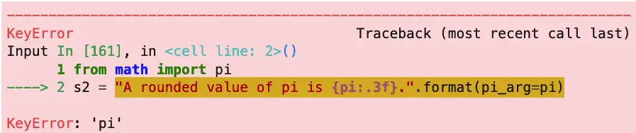

Python Format Strings: Beginner to Expert¶
Note: this is part of a series of articles on Python for Beginners.
I’ve learned several programming languages throughout my career, and whenever I start to learn a new one, one of the first things I want to know about it is how to do string formatting. I realize that to many non-programmers, their idea of what we do involves a cross between slinging binary and reading the matrix. Nevertheless, I’ve found over the years that I’m going to spend a lot of my time formatting strings on almost every project.
String formatting is the process of injecting – or “interpolating” – other things into a string to get the result we want. Most beginners begin learning how to format using string concatenation and print, but more flexible techniques include f strings and the string format method.
String formatting is an essential skill for any Python programmer to master. Formatting strings allows you to display data in a more readable and concise way. This article will discuss the different methods for formatting strings in Python.
Python has quite a few distinct ways to do this, and for any particular task, the format string you’ll need to use may be pretty specialized, so we’ll need to be selective about what string formatting techniques we cover. We want to start slowly by discussing what beginners first learn about how to work with strings, then move on to the current favorite of most Python developers, formatted string literals (or “f strings”). Next, we’ll take on what is probably the second-most common method you’ll find in modern Python codebases, the string format method, str.format.
String Formatting for Beginners¶
The vast majority of us began our careers with some version of this program:
print("Hello, world!")
As we start to advance a little further, we soon learn that we can also format strings in exciting ways by either passing multiple strings (or even other types) to the print function or by concatenating strings. Daisha, for example, soon learns that the following three lines all produce the same output:
print("Hello, Daisha!")
print("Hello,", "Daisha!")
print("Hello, " + "Daisha!")
The first version uses a string literal. The second one passes multiple positional arguments to the print function, relying on it to put a space character between the positional arguments. The third example uses simple string concatenation, which is somewhat inefficient but otherwise works fine.
The print function has more goodness on offer. Because it converts the arguments passed to it to a string (using their __str__ function), we can call it on various types. We can also implement __str__ on our user-defined data type to allow it to be displayed nicely.
Need a quick nursery rhyme? Python print has you covered.
print(1,2, "...")
print("Buckle my shoe!")
print([3,4], "...")
print("Print some more!")
Output:
1 2 ...
Buckle my shoe!
[3, 4] ...
Print some more!
OK, I’m no Mother Goose, but you get the idea.
Beyond the Basics: The Format Method vs. F Strings¶
Print is a forgiving and gentle guide to begin our Python programming journey, but we soon bump into its limitations. The most obvious is that not every string is destined to appear in standard output. Sometimes we’re passing it to another function for processing, for example. A string we’ve formatted may get displayed by a web browser front end that isn’t even written in Python.
Today, there are two important formatting methods for modern Python code.
Python F Strings¶
Formatted string literals — also called f-strings – are the newest method. They were introduced in Python 3.6 (released in December 2016) and have gained popularity ever since. F-strings are easy to use and offer a more convenient alternative to other methods of string formatting, such as %-formatting and str.format(). F-strings allow you to embed variables inside a string by enclosing them in curly braces {}. The variables will then be replaced with their value when the string is evaluated.
Let’s start with a straightforward example for now as an appetizer and dive into the details in a later section.
name = "John"
score = 10
scale_info = {"scale": 10, "type": "logarithmic"}
formatted = f"{name} gives f strings a score of {score} out of {scale_info['scale']}!"
print(formatted)
Output:
John gives f strings a score of 10 out of 10!
As you can see, we can format various types and even embed expressions between the curly braces.
str.format¶
The other common method of string formatting is str.format. The format method is a string formatting method that has been available in Python since version 2.6. It is still widely used today because it is easy to read and understand and very flexible. Str.format can be used with positional arguments or named arguments. Positional arguments allow you to specify the order in which the replacements will be made. In contrast, named arguments may make it more obvious at a glance which argument matches which placeholder.
How to Format a String Using F-Strings¶
We saw above that the f-string method is easy to use. We prepend an f to a string literal, and within the literal, enclose a Python expression in brackets. Two plus two equals four becomes:
value = 2
message = f"{value} + {value} = {value+value}"
In addition to the simple uses, both f-strings and str.format allow you to take advantage of a special syntax called for precise string formatting. This special syntax is called the “Format Specification Mini-Language, and it’s described formally in the Python documentation.
In simplest terms, the basic idea is that given an f-string with an expression in it, f”{expression},” we can add a colon between the expression and the closing curly brace, followed by something called a format specifier, to control the formatting of the expression. These format specifiers won’t be new to you if you’ve worked in other languages. They form the basis of string formatting methods in different languages, dating back to C in the 1980s.
Specifying How Many Decimals Are Displayed¶
For example, F-strings make it easy to format floating-point numbers by allowing you to specify the number of decimal places. You’re a teacher, let’s say, and you decide that the default values Python prints for the math constants will give your students too many decimals to memorize:
import math
print(f"Pi is {math.pi} and e is {math.e}!")
Output:
Pi is 3.141592653589793 and e is 2.718281828459045!
Yikes! That’s crazy talk. How many decimal places is that?
Let’s make it more manageable using the appropriate specifiers:
print(f"Pi is {math.pi:.2f} and e is {math.e:.2f}!")
Output:
Pi is 3.14 and e is 2.72!
The output is much more readable now. The f-string is a bit harder to read. Still, it’s simply the expression, a colon to indicate a format specifier is about to show up, and the specifier itself: .2f, which in effect tells Python, “format it as a fixed-point number with two digits of decimal precision, please.”
Although it doesn’t involve special format codes, an alternate way to accomplish this is to use the round method, which returns a rounded float. The following example produces the same output as above while again demonstrating the use of Python expressions inside the curly braces.
print(f"Pi is {round(math.pi, 2)} and e is {round(math.e, 2)}!")
More Numbers Formatting: Octal, Hexadecimal, Binary¶
While we’re discussing numbers, it’s pretty straightforward to output numbers in various number bases that programmers find convenient to use. We do this with a single letter representing the base we want. Decimal is the default, so we often omit it, but if you’re curious, the letter is “d.” We use “o” for octal, “x” for heXadecimal, and b for binary format.
age = 21
how_old = f"{age} in decimal is {age:x} in hexadecimal, {age:o} in octal, and {age:b} in binary."
print(how_old)
Output:
21 in decimal is 15 in hexadecimal, 25 in octal, and 10101 in binary.
I doubt that any of my readers are still using the octal format for anything except string formatting examples, but hex and binary are still important from time to time.
Scientific Notation in Python: General Format vs. Exponent Format¶
If you’re an astrophysicist or a specialist in viral diseases, you’re probably very used to thinking about numbers that are very large on the one hand or very small on the other. For the rest of us, we may have learned about scientific notation in the fifth grade. If you don’t need a brief refresher, feel free to skip over the next paragraph.
Scientific notation is sometimes known as exponential notation because it is equivalent to multiplying a number by ten raised to a power. For example, 1 × 10⁵ is written as 1e5 in scientific notation. In Python, scientific notation is represented using the letter ‘e’ or ‘E,’ followed by a positive or negative integer. We can convert a number in scientific notation to decimal form by moving the decimal point to the left or right according to the exponent. For example, 1e5 is equal to 100000 in decimal format. Scientific notation can be used with any numeric type, including ints and floats.
With that introduction, let’s see how to format a string using the general and exponent formats. The general format method uses “g” or “G” and only uses exponent format if the number is very large or small. The exponent format method (“e” or “E”) always formats the number using scientific notation. In both cases, where the number is shown in scientific notation, the capital letter version gives you a capital “E,” the lowercase version, a lowercase “e.”
Here are some examples.
big_num = 1_234_567_890
small_num = 1234
print("Use exponent for large numbers only")
print(f"big_num = {big_num:g}")
print(f"big_num = {big_num:G}")
print(f"small_num = {small_num:g}\n")
print("Always use exponent")
print(f"big_num = {big_num:E}")
print(f"small_num = {small_num:E}")
Output:
Use exponent for large numbers only
big_num = 1.23457e+09
big_num = 1.23457E+09
small_num = 1234
Always use exponent
big_num = 1.234568E+09
small_num = 1.234000E+03
How to Automatically Add Commas To a Number¶
Adding commas to the string representation of a number is straightforward in Python. For example, beginning with a replacement field expression surrounded by curly braces, add the usual colon after the field name to separate it from the formatting instructions, then add a comma.
big_num = 1_234_567_890
print(f"{big_num:,}")
Output:
1,234,567,890
If you need to display the separator “Python-style” using an underscore (“_”), you can substitute an underscore for the comma in the previous example.
“It Works On My Machine?”¶
As those who’ve ever worked on code for international markets know, assuming that the comma is the thousands separator is problematic. Germany, for example, uses a “.” to separate thousands, while Sweden uses spaces!
The Python documentation advises using the “n” specifier to format numbers in a locale-independent way. Still, to make this code work, you need to set the locale for all categories to the settings the user has configured (or the default for their machine based on their language). The example below shows how to do this
import locale
locale.setlocale(locale.LC_ALL, '')
print(f"{big_num:n}")
The example above still displays a comma on my machine because the language I’m working with is US English, but now this code will do the right thing on Heidi’s machine and Olaf’s!
How to Align Signed Numbers in Python¶
Much of what we’ve been discussing so far are general formatting techniques that you can use in any situation. For example, formatting fixed decimal widths (or rounding) may be needed whether your ultimate display is a fixed-width device or a browser that may be using a variable-width font.
However, aligning signed numbers and many other alignment techniques employ format codes that are useful to know, but you may not need them every day unless you’re working with fixed-width displays.
We can align signed numbers in Python on fixed-width displays by adding a plus sign (“+”) or space to a numeric format specifier, optionally followed by a minimum width. This prepends a plus sign or space to a positive number. This helps us align columns if some of the numbers are negative.
number = 10
negative = -number
# default
print(f"{number}")
print("-----")
# Aligned
print(f"{number:+}")
print(f"{number: }")
print(f"{negative}")
Output:
10
-----
# Python Format Strings: Beginner to Expert+10
10
-10
Immediately after the sign specifier, we can also include a minimum width specifier (but keep in mind again that minimum field width only works on terminals or with fixed-width fonts):
print(f"{number:+20}")
print(f"{number: 20}")
print(f"{negative: 20}")
+10
10
-10
Unlike the number we’re trying to format, where python expressions, literal values, and variables are allowed, the number specifying the width must be a literal value. Thus “print(f"{number:+number}")” will result in an “Invalid format specifier value” error.
Python String Alignment¶
What you need to align may not be a number, of course. You might need to align some text on a fixed-width screen. Programming examples come and go, but in my opinion, you haven’t truly lived until you’ve coded a Christmas tree out of asterisks using ASCII art.
Ho, ho, ho!
As you’ve no doubt guessed by now, Python string alignment using f string formatting is easy enough to do. Left alignment is the default, so we rarely need it. Centering is done by following the colon with a fill character (often a space), a caret (^) to select a centered format, and a number representing the total size (in horizontal spaces) of the imaginary box we’re centering the text in. As usual, the format codes in the example tell the story more concisely:
sale = ["HUGE LIQUIDATION SALE!", "All Python code up to 85% off.", "Everything must go!"]
print("$"*40)
for item in sale:
print(f"{item: ^40}")
print("$"*40)
Output:
$$$$$$$$$$$$$$$$$$$$$$$$$$$$$$$$$$$$$$$$
HUGE LIQUIDATION SALE!
All Python code up to 85% off.
Everything must go!
$$$$$$$$$$$$$$$$$$$$$$$$$$$$$$$$$$$$$$$$
If you need to right-align your text instead, replace the caret in print(f"{item: ^40}") in the above code with a greater than symbol: print(f"{item: >40}").
How to Format a String Using the Format Method¶
Besides using f-strings, another common technique in modern code for formatting Python strings is to use the format method of the Python str class. Formatting a string using the string format method is often done by calling this method directly on a formatting string literal.
Compared to f-strings, we’ll spend relatively little time on the format method. Spending less time on format is not because it’s not common in code or useful to know. It is both of those things. The reason for covering f-strings in somewhat greater detail boils down to this:
Most Python developers I know discover f-strings and find them so convenient that they use them going forward for everything.
If you need to read or find you need to prepare a string using
str.format, you’ll realize it uses the same types of string interpolation and formatting codes that we learned about in our earlier discussion. I won’t duplicate examples, but those I’ve tested were easy to convert.
That said, there are some differences between using str.format and using formatted string literals. We’ll discuss some of the most important differences in the next section.
Using an F String vs. the String Format Method¶
There are a few differences between using an f string and the format method. The most obvious one is that for an f string, a name, expression, or literal is specified as the first element after the opening curly brace. In contrast, because the format method is a Python function, like all Python functions, the argument list can consist of positional arguments, keyword arguments, or a combination of the two.
Calling it with keyword arguments makes the literal we’re calling it on look very similar to the use of f-strings. The difference is that the name is set up in the function call, rather than before the f-string is evaluated. Compare, for example:
from math import pi
s1 = f"A rounded value of pi is {pi:.3f}."
s2 = "A rounded value of pi is {pi:.3f}.".format(pi=pi)
print(s2)
print(s1 == s2)
Output:
A rounded value of pi is 3.142.
True
You may have noticed a subtle difference here. In the f string version (s1), the pi that appears in the string interpolation expression is already defined (imported from the math module). In the format version, the pi actually refers to that keyword argument name, not the variable. We can show this if we change things the name of the keyword argument, so it no longer matches.

As you can see, if you use keyword arguments in a call to format, the text for the argument must match the text given in the formatting string. However, as with keyword parameters generally, the order is flexible. For example:
weapons = ["fear", "surprise", "fanatical dedication to the Pope"]
print("Nobody expects a {surprise}! Our {count} main weapons are\n{weapons}".
format(weapons=weapons, count=(len(weapons) - 1), surprise="Spanish Inquisition"))
Output:
Nobody expects a Spanish Inquisition! Our 2 main weapons are
['fear', 'surprise', 'fanatical dedication to the Pope']
In contrast, positional arguments are ordered by definition, especially if we use blank format codes to correspond to them.
from datetime import datetime
days = ['Monday', 'Tuesday', 'Wednesday', 'Thursday', 'Friday', 'Saturday', 'Sunday']
day_of_week = days[ datetime.now().weekday() ]
print("Hi {}! Today is {}. Enjoy your day!".format("everybody", day_of_week))
Output:
Hi everybody! Today is Monday. Enjoy your day!
On the other hand, the format method is so flexible that there’s some flexibility even with a positional argument. That’s because instead of leaving the formatting string blank, we can specify a numeric position in it, as in priWeformat(“world”). If we do that, we can even re-use the positional argument more than once in the same string if we do that.
print("Hello, {0}. The {0} is your {1}!".format("world", "oyster"))
Output:
Hello, world. The world is your oyster!
What Is Old-Style String Formatting?¶
From time to time, you may see code that looks like this:
print("%s has many ways to format string; use this one for Python < %.1f." % ("Python", 2.6))
Output:
Python has many ways to format string; use this one for Python < 2.6.
The Python documentation refers to this as “printf-style String Formatting.” You should refer to the documentation if you need to work on such legacy code. Although this string formatting style isn’t officially deprecated, since Python 3.0, it is not the recommended approach. Indeed, having an upgrade path may be one reason why str.format was back-ported to Python 2.6.
Closing Thoughts¶
As you’ve no doubt guessed by now, I’m a big fan of f-strings, and I tend to use them in all my new code. When I was learning to code, I was also a big fan of string formatting examples. These days, many of the alignment tricks we’ve discussed in this article may not be as useful if you’re targeting a web platform (except perhaps for logging). Still, a good basic knowledge of Python string formatting is an essential skill for every Python developer.